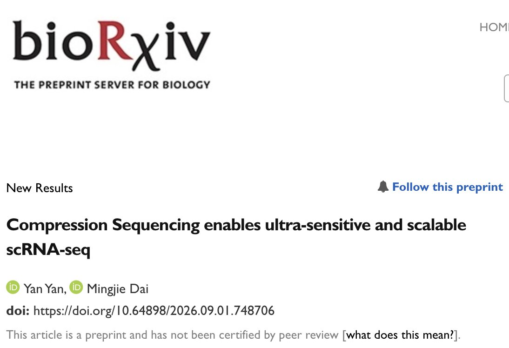

Compression Sequencing enables ultra-sensitive and scalable scRNA-seq
biorxiv · 2026 · DOI
Abstract
Current sequencing methods are inefficient and bottlenecked by repeated sampling of highly abundant molecules, which dominate sequencing reads, limit assay throughput and sensitivity for rare targets. For example, single-cell RNA sequencing (scRNA-seq) can profile up to millions of cells, but remains severely constrained by sequencing cost, resulting in shallow gene coverage and high dropout rate. Here we report an information science-inspired method, “Compression Sequencing”, that tackles this fundamental inefficiency and enables highly improved (>100x) sequencing power. Our method works by performing an accurate and unbiased logarithmic transform on molecular abundances over a wide (5 logs) dynamic range, thus suppressing high-abundance targets and enriching rare ones, while maintaining quantitative accuracy. Applied to scRNA-seq libraries, our method allows ultra-sensitive detection of low-abundance transcripts (2-5x more UMIs), ultra-low sequencing cost (200x reduction), preserves accurate cell types and differential expression analysis over a 500-2,000 gene panel. In AML clinical samples, Compression Sequencing reproduces clinical diagnosis and additionally allows transcriptomic profiling at affordable cost (est. $10 per sample). Our approach thus enables ultra-sensitive and scalable single-cell analysis for large-scale functional genomics studies, drug discovery screens, AI cell model training, as well as affordable single-cell disease diagnostics.